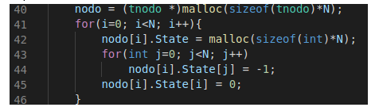

Algoritmo VRing
Tarefa 0
Como primeiro passo do trabalho foi solicitado a compilação e execução corretas do código em tempo.c, que implementa apenas o agendamento dos testes de cada processo.
Tarefa 1
Tarefa: fazer cada um dos processos testar o seguinte no anel. Implemente o teste com a função status() do SMPL e imprimir (printf) o resultado de cada teste executado. Por exemplo: “O processo i testou o processo j correto no tempo tal.”
Esta tarefa é feita apenas com a seguinte modificação:
Checa-se o status do próximo processo do anel, token+1%N, e imprime de acordo com o status do processo testado.
Tarefa 2
Tarefa: Cada processo correto executa testes até achar outro processo correto. Lembre-se de tratar o caso em que todos os demais processos estão falhos. Imprimir os testes e resultados.
Esta tarefa é feita com a seguinte modificação:
Na linha 66 é salvo o índice do próximo processo do anel. O while da linha 67 é executado enquanto não se encontra um processo correto, ou seja, nodo[k].id != 0. Na linha 70 atualizamos o índice para o próximo processo, caso voltemos ao processo inicial (token) significa que testamos todos os processos do anel. O if da linnha 74 checa se testei todos falhos ou se houve um processo correto.
Tarefa 3
Tarefa: Cada processo mantém localmente o vetor State[N]. Inicializa o State[N] com -1 (indicando estado “unknown”) para todos os demais processos e 0 para o próprio processo. Nesta tarefa ao executar um teste, o processo atualiza a entrada correspondente no vetor State[N]. Em cada intervalo de testes, mostre o vetor State[N].
A primeira modificação é criar um vetor State para cada nodo:
Depois inicializá-los:
Após isso é necessário atualizar o vetor State a cada teste
A linha 70 checa se o processo testado está como estado “unknown”, caso sim, atualiza-se o vetor State do testador para considerar a falha testada. Caso não, e o processo testado estava considerado correto, ocorreu um evento, portanto incrementa-se o valor do State na posição do processo testado.

Tarefa 4
Tarefa: Quando um processo correto testa outro processo correto obtém as informações de diagnóstico do processo testado sobre todos os processos do sistema exceto aqueles que testou nesta rodada, além do próprio testador.
Para copiar atualizar o vetor State com informações do processo testado correto é necessária a modificação:
O for da linha 91 atualiza os estados dos processos que não foram testados pelo testador, ou seja, do processo próximo ao testado até o processo anterior ao testador. Por exemplo, considere o processo 0 como testador na figura abaixo.
Se o processo 1 foi testado correto, então o processo 0 atualiza suas informações sobre os processos 2, 3, 4 e 5.
Algoritmo Vcube versão 2
Este algoritmo foi implementado de forma que em cada intervalo de testes todos os logN clusters são testados.
Um exemplo da função cis utilizada para determinar os testes executados por cada processo segue abaixo.
Foi criada uma estrutura para representar a lista de testes a executar de cada processo, sendo uma lista de inteiros.
Observe que antes de executar os testes, cada processo deve atualizar sua lista de testes, pois caso algum processo esteja falho, é necessário atualizar quem serão os testados de cada testador. Portanto foi criada a função resetaLista que reseta a lista de testes de cada processo e a função criaListasTestes que define os testes realizados da rodada.
Exemplo de execução da função criaListasTestes para N=8:
O processo 0 é testado por 1 no primeiro cluster, por 2 e 3 no segundo cluster e por 4, 5, 6 e 7 no último cluster. Portanto, caso 1, 2 e 4 estejam corretos, é inserido 0 na lista de testes de cada um destes.
Na figura abaixo, o loop da linha 180 percorre a lista de testes do processo atual. As linhas 184 e 186 atualizam o estado do processo testado para correto. Como o processo está correto, o for da linha 188 atualiza o vetor State do testador com qualquer novidade.
Latência e número de testes no melhor e pior caso
Para discutir o melhor e o pior caso, duas definições são necessárias:
Latência: após a ocorrência de um evento quantas rodadas necessárias até que todos os processos saibam do evento?
Rodada: Uma rodada de testes do algoritmo VCube acontece quando todos os processos corretos testaram pelo menos um de seus clusters.
O pior caso
O algoritmo original do VCube tem como pior caso log²N (na base 2), porém como testamos todos os clusters em um mesmo instante de tempo, o pior caso passa a ser logN.
Exemplo:
Considere que o processo 0 falha no instante de tempo t0 e todos os demais processos estão corretos.
1 2 4 testam o processo 0 e descobrem que está falho em t3. Porém, antes dos processos 1 2 4 descobrirem o evento, os processos 3 5 6 testaram 1 2 4 em t2, logo será necessária mais uma rodada para que os outros processos descubram o evento.
Na segunda rodada, 3 5 6 testam os processos 1 2 4 e descobrem o evento. Porém, 7 testa 3 5 6 antes da descoberta do evento, logo será necessária mais uma rodada para que o processo 7 saiba do evento.
Na próxima rodada, 7 testa 3 5 6 e descobre o evento no processo 0. Logo a latência foi de logN = 3 rodadas e de 69 testes.
Um possível agendamento de testes que exemplifica esse pior caso é o que segue abaixo.
Observe o resultado da primeira rodada abaixo. Apenas os processos 1, 2 e 4 descobrem o evento.
Na segunda rodada os processos 3 5 6 também descobrem o evento.
Como última rodada, o processo 7 testa os processos 3 5 6 e descobre o evento em 0.
O melhor caso
Os processos 1 2 4 testam o processo 0 e descobrem o evento. Um pouco depois desta descoberta 3 5 6 realizam seus testes da rodada em 1 2 4, descobrindo o evento. Logo depois, 7 testa os processos 3 5 6 e descobre o evento. Logo a latência foi de apenas 1 rodada, com 23 testes.
Agendamento:
Observe o resultado abaixo, todos os processos descobrem o evento no processo zero em apenas uma rodada.